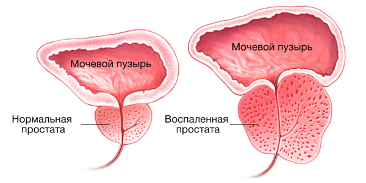

Жинсий заифлик ва психология
Эркак бу табиатнинг энг кучли тимсоли. Аммо эмоционал кечинмалари хам шу даражада кучлики,
агар бу оила бошликларининг нозик эркаклик кучига тегишли булса хамда бу кучга нисбатан ишончсизлик пайдо килса.
Статистика - бу кайсар илмиёт хисобланиб, у билан келишиш жуда кийин. Аммо у шуни курсатадики,
бу муаммо билан 40 ёшдан ошган 150 миллион эркаклар азият чекмокда. Аммо бу курсаткичдан ташкари 25% эркаклар
орасида
ёш курсаткичи 35 ёшгача булганлари ачинарли холат албатта.
13-йиллик тажрибага эга хиндистонлик уролог-андролог MBBS, MS, MCH Рахул Гупта. Хозирда Хиндистоннинг
Нойда шахаридаги Фортис Ассоциациясининг раиси хамда бош мутахассис сифатида фаолият олиб бормокда.
Машхур россиялик уролог Дмитрий Пушкарьнинг айтганидек: « Протата бу-МИФ, простата раки эса куринмасдир». Бу
фикрга нима дейсиз? Ахир хозирда простатит эркаклар орасида кенг таркалиб, жинсий заифлик сабабларидан бири
болиб келмокдаку?
Албатта простатит бор касаллик. Шунчаки Дмитрий Пушкарь эркаклар каттик тушкунликка тушиб колмасликлари учун
айтган болса керак деб хисоблайман.
Простата бези-«Эркакнинг иккинчи юраги» унинг касалланиши хозирда эркакларнинг 80% га тугри келмокда. Эрта даври
20-42 ёш оралиги саналади. Авваллари бу курсаткич 55-65 ёш оралигида кузатилар эди.
Калаллик уткир хамда сурункали холда кечади. Айнан хозирда сурункали формаси таркаб бормокда. Уни эрта аниклаш
дастлабки белгиларига эьтиборлирок булиш ва зудлик билан даволаш лозим!

Бу касалликнинг келиб чикишидаги асосий сабаблар хакида тухталсангиз? Нимага айнан бу
касаллик хозирда купайиб бормокда?
Асосий сабабларидан бири бу камхаракатлилик. Биз хозирда ривожланган шароитда яшамокдамиз.
Хаттоки масофадан туриб керак булса бита жойда утирган холатда бир неча ишларни бажаришимиз мумкин.
Бу эса гиподинамия хисобланиб кичик чанок бушлигида кон айланишининг сусайишига сабабчи булади. Натижада
простатадаги
димланиш юзага келтириб сурункали форма шакллана бошлайди. Буни эрта даврларда аниклаш ва зудлик билан
даволаш мухим.
кейинги сабабларидан
нотугри овкатланиш
кеч жинсий хаетга кириш еки хаддан ортик жинсий фаолиятда булиш
турли даражадаги совуккотишлар
ич котиши
инфекцион касалликлар ва х.к.
Юкорида сиз эрта даврларидаги белгиларга этиборли булиш хакида тухталдингиз шу хакида батафсил
маьлумот берсангиз?
Сурункали формасининг илк белгиларига:
базан пайдо булиб кейин йуколиб турувчи огриклар.
коникиб сийишнинг булмаслиги, сийгандан кейинги томчилаб келиб туриши баьзан шилимшик секрет ажратиб туриши.
Тез чарчаш, уйкучанлик, кизикишнинг пасайиши
Жинсий хаетнинг заифлашиши. айнан мана шу белгига эьтиборлирок булиш керак. бу куйидагиларни уз ичига олади:
Жинсий кизикишнинг пасайиши, алокадан кейин еркин хиссиетларнинг булмаслиги, эрекциянинг пасайиши, огрикли
шахват чикиши, тунги эрекциянинг сабабсиз кучайиши, Сперма сифатининг пасайиши.
ШУ КАБИ БЕЛГИЛАР ПАЙДО БУЛАЁТГАН БУЛСА ЗУДЛИК БИЛАН ХОЗИРОК ДАВОЛАНИШНИ
БОШЛАНГ!!!
Медикаментоз ечим канчалик самарали?
Биласизми бу махсус кимёвий аптека дорилари оркали амалга оширилади. Лекин мен буни хам тавия килмаган болардим
аптека дорилари бир жойни даволаса бошка жойга зарар килади купчилик холатда гормонал фонни бузади, хамда организмда
унга нисбатан органиб колишни пайдо килади. куп антибиотикларни куллаш эса иммун фаолликни тушишига ва иккиламчи
инфексиялрни пайдо булишига сабабчи булади. Шунинг учун мен табиий даволаш йулларини тавсия килган булар эдим.
Эшитишимиз буйича сизнинг бошчилигингизда бу борада ишлар олиб борилиб бу каби
муаммоларнинг ечими топилган экан?
Албатта, хозирги замонавий тиббиёт яна эски ота боболаримиз куллаган усулларга кайтишни макул кура бошлади яна
табиий воситалар гиёхларга. Айтганимиздек инновацион ривожланган асрда яшаяпмиз. Юкори технологиялар асосида асосида
гиёхлардан керакли моддаларини ажратиб олибш имкониятига эгамиз. Улардан керакли малхамлар комбинациясини яратиш энг
самарали ва зарарсиз усуллардан хисобланади. Биз хам шу принципда иш олиб бордик.
Сизнинг тадкикот марказингизда илонларга кузимиз тушди. Бу жонзотнинг хам сизлар ишлаб чикараётган табиий восита
билан богликми?
Биласизми табобатда илон захри ноёб восита хисобланади. Унинг куритилган холатида 70-90%и мураккаб оксил моддалари,
эркин аминокислоталар, ёглар, ёг кислоталари, натрий, калций, калий, рух, магний, фосфор, кремний, темир, кумуш каби
микро макро элементлар мавжуд. Илон захаридан тайерланган дорилар кучли яллигланишга карши таьсирга эга ва
огриксизлантирувчи дори хисобланади. Macrovipera lebetina Илонидан олинади. Яшаш шароити иссик кумликларда кечади.
Айнан унинг захридан тайерланган дорилар сурункали шамоллаш касалликларида кулланилади. Захар 50-60 кунда бир марта
олиниб. 3 ой давомида 70-80% гача куритилиб экстракция килинади. Бундан ташкари Куста ал Хиндий ноеб усимлиги бу
усимлик таерланган воситалар организмдаги турли яллигланиш касалликларини бартараф килади. Яна бир неча ноеб
гиёхлардан фойланамиз аммо уларнинг номлари сирлигича колсин.
Бу табиий воситани Узбекистон дорихоналарига олиб киришда муаммо булганлиги хакида эшитдик. Шу хакида айтиб
утсангиз?
Тугрисини айтсам Узбекистонда фармсаноат шу даражада кучайганлигини куриб узим хайратдаман. Дорихоналар хаддан ортик
куп. Бошка ривожланган давлатларда хар бир худуд буйича санокли дорихона булиб, дорилар хам катьий шифокор махсус
рецепти асосида берилади. Хаттоки оддий бош огриги дориси хам. Аксарият халки табиий воситалардан фойдаланади. Шу
сабабли фармсаноат биздан унинг номи билан иш коришни хохлашди биз эса шунча йиллик мехнатимизни уларга беришни
хохламадик натижада зиддият юзага келди.
Унда Узбекистонликлар каердан олишлари мумкин бу воситани?
Бунинг ечимини топдик. Биз билан хамкорликда ишламокчи булган мутахассисларни топдик уларни укитдик ва улар билан
биргаликда махсус платформа яратдик. Ана шу платформа оркали бемалол биз билан богланиб мутахассисларимиз назорати
остида воситани куллаш имконига эгалар хозирда. Пастда платформа шаклини колдирганмиз шу оркали бемалол биз билан
богланиб буюртма беришлари мумкин. Факат эслатиб утмокчиман сони чегараланган ва хозирок боглансалар махсус
чегирмага эга буладилар.
.png)